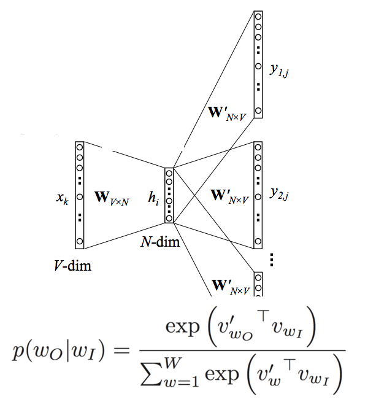

Research
investigating the neural correlates of learning and memory
Learning and memory are major cognitive functions whose effects have puzzled humanity for hundreds of years (Squire 2004). How is it that the brain achieves such a rich and cognitively demanding task of such vivid memories of all aspects of our life? We may recall the comical scene of our first kiss or where we were standing on September 11th, and parents among us have the smile on their child's face etched into their minds forever as they recall her taking her first steps. These memories and learned experiences are what define us, as well as what remain as shadows in cognitive diseases such as Alzheimer's.
The remarkable findings from patients with neuro-anatomical lesions were the first step to decipher the regional specificity of localized regions whose dysfunction results in specific behavioral deficits to learning and memory. From this work, as well as countless interspecies models, regions known as the entorhinal cortex and hippocampus have been found to largely be associated with learning and memory (Squire 2002). These regions form a culmination of the brain’s processing, integrating preprocessed information from external sensory cortices, with cortical projections being sent to the entorhinal cortex, through the hippocampus, and back to the cortex through the entorhinal region (Eichenbaum, 2000). Despite the attention these areas have received, the specific computations this information undergoes remain largely unknown.
For example, within the hippocampus and entorhinal cortex, it is well documented that fluctuations of activity from large numbers of neurons, especially in the 6-10Hz range known as Theta, can be used as a biomarker to track the processing that these areas are performing (Buzsaki, 2002). In the hippocampus, theta activity is not synchronous throughout, but rather the peak of each wave is offset 180 degrees down the long axis of the structure. (Lubenov and Siapas, 2009; Patel, 2012). Whether similar dynamics exist in the entorhinal cortex however, is unknown. If these dynamics do not exist, it would add evidence that the theta offset in the hippocampus is intrinsic to the structure. However, if found, then the Hippocampal offset waves may be a product of the afferent projections from the Entorhinal cortex to the Hippocampus.

catastrophic semantic forgetting

There has been an increased prominence of predictive neural network models that use principles of reinforcement learning to build representations of word meaning when trained on a language corpus. These “neural embedding” models have taken the field by storm, partially due to the resurgence of connectionist architectures, but also due to their remarkable success at fitting human data. However, no attention has been paid to the consequences that catastrophic forgetting (CF), an inherent problem with connectionist models, has on the neural embeddings learned by these models. CF is a natural consequence of continuous learning in a connectionist architecture, and can affect the network’s ability to represent multiple meanings of words when learned sequentially. We explore the effect of CF on a modern neural embedding model of semantic representation (word2vec) by using homonyms as an index of bias when varying the order in which a corpus is learned. If the corpus is learned in random order, the final representation tended towards the dominant sense of the word (bank → money) as opposed to the subordinate sense (bank → river). However, if the subordinate sense was more recently presented to the network, the new learning erased the previously learned representation of the dominant sense. We demonstrate the impact of CF and sequence of learning on the final neural embeddings learned by word2vec in both an artificial language and in an English corpus, and explore recently suggested methods to insulate against CF in deep learning architectures.
philosophy of mind
Check for updates soon!
publications
Will update soon!